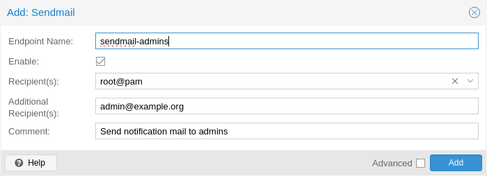
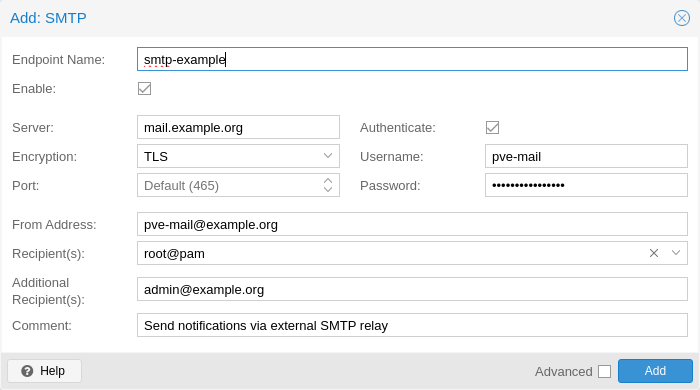
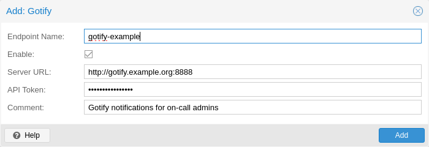

Proxmox VE offers multiple types of notification targets.

The sendmail binary is a program commonly found on Unix-like operating systems that handles the sending of email messages. It is a command-line utility that allows users and applications to send emails directly from the command line or from within scripts.
The sendmail notification target uses the sendmail binary to send emails to a
list of configured users or email addresses. If a user is selected as a
recipient, the email address configured in user’s settings will be used.
For the root@pam user, this is the email address entered during installation.
A user’s email address can be configured in Datacenter → Permissions → Users.
If a user has no associated email address, no email will be sent.
In standard Proxmox VE installations, the sendmail binary is provided by
Postfix. It may be necessary to configure Postfix so that it can deliver mails
correctly - for example by setting an external mail relay (smart host). In case
of failed delivery, check the system logs for messages logged by the Postfix
daemon.
The configuration for Sendmail target plugins has the following options:
mailto: E-Mail address to which the notification shall be sent to. Can be
set multiple times to accommodate multiple recipients.
mailto-user: Users to which emails shall be sent to. The user’s email
address will be looked up in users.cfg. Can be set multiple times to
accommodate multiple recipients.
author: Sets the author of the E-Mail. Defaults to Proxmox VE.
from-address: Sets the from address of the E-Mail. If the parameter is not
set, the plugin will fall back to the email_from setting from
datacenter.cfg. If that is also not set, the plugin will default to
root@$hostname, where $hostname is the hostname of the node.
The From header in the email will be set to $author <$from-address>.
comment: Comment for this target
Example configuration (/etc/pve/notifications.cfg):
sendmail: example
mailto-user root@pam
mailto-user admin@pve
mailto max@example.com
from-address pve1@example.com
comment Send to multiple users/addresses
SMTP notification targets can send emails directly to an SMTP mail relay. This target does not use the system’s MTA to deliver emails. Similar to sendmail targets, if a user is selected as a recipient, the user’s configured email address will be used.
Unlike sendmail targets, SMTP targets do not have any queuing/retry mechanism in case of a failed mail delivery.
The configuration for SMTP target plugins has the following options:
mailto: E-Mail address to which the notification shall be sent to. Can be
set multiple times to accommodate multiple recipients.
mailto-user: Users to which emails shall be sent to. The user’s email
address will be looked up in users.cfg. Can be set multiple times to
accommodate multiple recipients.
author: Sets the author of the E-Mail. Defaults to Proxmox VE.
from-address: Sets the From-address of the email. SMTP relays might require
that this address is owned by the user in order to avoid spoofing. The From
header in the email will be set to $author <$from-address>.
username: Username to use during authentication. If no username is set,
no authentication will be performed. The PLAIN and LOGIN authentication
methods are supported.
password: Password to use when authenticating.
mode: Sets the encryption mode (insecure, starttls or tls). Defaults
to tls.
server: Address/IP of the SMTP relay.
port: The port to connect to. If not set, the used port .
Defaults to 25 (insecure), 465 (tls) or 587 (starttls), depending on
the value of mode.
comment: Comment for this target
Example configuration (/etc/pve/notifications.cfg):
smtp: example
mailto-user root@pam
mailto-user admin@pve
mailto max@example.com
from-address pve1@example.com
username pve1
server mail.example.com
mode starttlsThe matching entry in /etc/pve/priv/notifications.cfg, containing the
secret token:
smtp: example
password somepassword
Gotify is an open-source self-hosted notification server that allows you to send and receive push notifications to various devices and applications. It provides a simple API and web interface, making it easy to integrate with different platforms and services.
The configuration for Gotify target plugins has the following options:
server: The base URL of the Gotify server, e.g. http://<ip>:8888
token: The authentication token. Tokens can be generated within the Gotify
web interface.
comment: Comment for this target
The Gotify target plugin will respect the HTTP proxy settings from the datacenter configuration
Example configuration (/etc/pve/notifications.cfg):
gotify: example
server http://gotify.example.com:8888
comment Send to multiple users/addressesThe matching entry in /etc/pve/priv/notifications.cfg, containing the
secret token:
gotify: example
token somesecrettokenWebhook notification targets perform HTTP requests to a configurable URL.
The following configuration options are available:
url: The URL to which to perform the HTTP requests.
Supports templating to inject message contents, metadata and secrets.
method: HTTP Method to use (POST/PUT/GET)
header: Array of HTTP headers that should be set for the request.
Supports templating to inject message contents, metadata and secrets.
body: HTTP body that should be sent.
Supports templating to inject message contents, metadata and secrets.
secret: Array of secret key-value pairs. These will be stored in
a protected configuration file only readable by root. Secrets can be accessed
in body/header/URL templates via the secrets namespace.
comment: Comment for this target.
For configuration options that support templating, the Handlebars syntax can be used to access the following properties:
{{ title }}: The rendered notification title
{{ message }}: The rendered notification body
{{ severity }}: The severity of the notification (info, notice,
warning, error, unknown)
{{ timestamp }}: The notification’s timestamp as a UNIX epoch (in seconds).
{{ fields.<name> }}: Sub-namespace for any metadata fields of the
notification. For instance, fields.type contains the notification type -
for all available fields refer to Notification Events.
{{ secrets.<name> }}: Sub-namespace for secrets. For instance, a secret
named token is accessible via secrets.token.
For convenience, the following helpers are available:
{{ url-encode <value/property> }}: URL-encode a property/literal.
{{ escape <value/property> }}: Escape any control characters that cannot be
safely represented as a JSON string.
{{ json <value/property> }}: Render a value as JSON. This can be useful to
pass a whole sub-namespace (e.g. fields) as a part of a JSON payload (e.g.
{{ json fields }}).
POST
https://ntfy.sh/{{ secrets.channel }}
Headers:
Markdown: Yes
```
{{ message }}
```Secrets:
channel: <your ntfy.sh channel>
POST
https://discord.com/api/webhooks/{{ secrets.token }}
Headers:
Content-Type: application/json
{
"content": "``` {{ escape message }}```"
}Secrets:
token: <token>